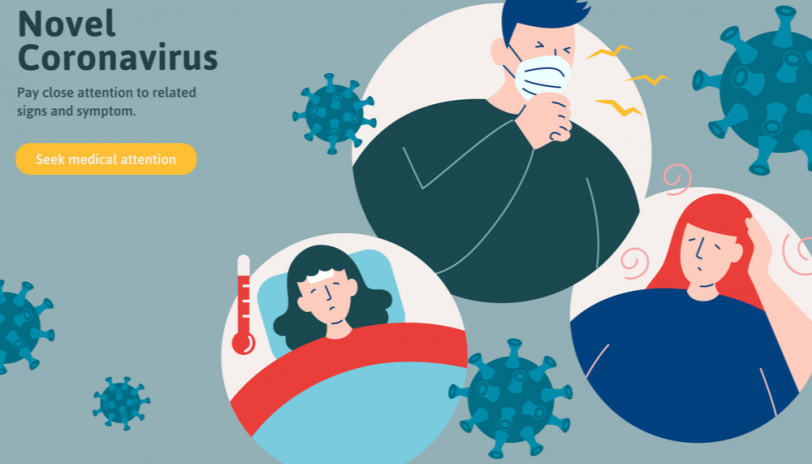

Symptoms
The most common symptoms of COVID-19 are

Other symptoms that are less common and may affect some patients include:
- Loss of taste or smell,
- Nasal congestion,
- Conjunctivitis (also known as red eyes)
- Sore throat,
- Headache,
- Muscle or joint pain,
- Different types of skin rash,
- Nausea or vomiting,
- Diarrhea,
- Chills or dizziness.
Other less common symptoms are:
- Irritability,
- Confusion,
- Reduced consciousness (sometimes associated with seizures),
- Anxiety,
- Depression,
- Sleep disorders,
- More severe and rare neurological complications such as strokes, brain inflammation, delirium and nerve damage.